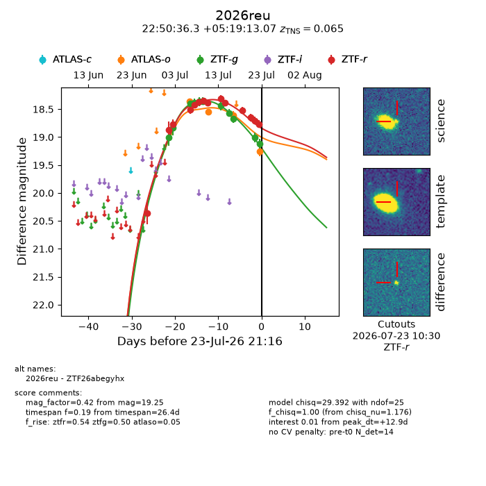
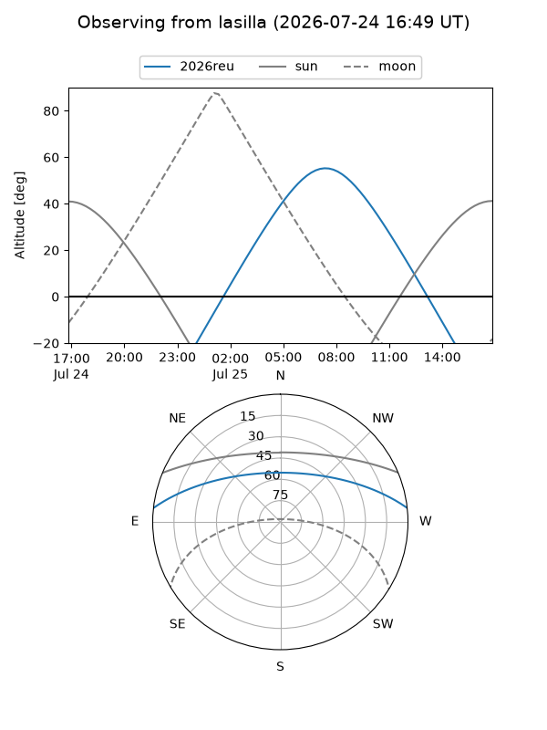
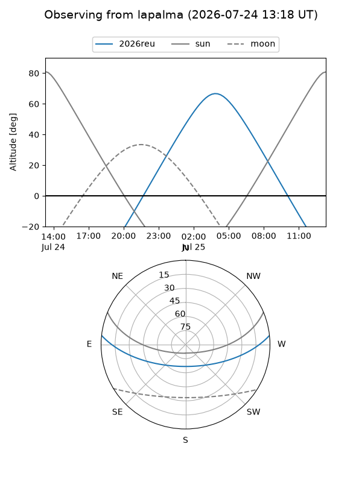
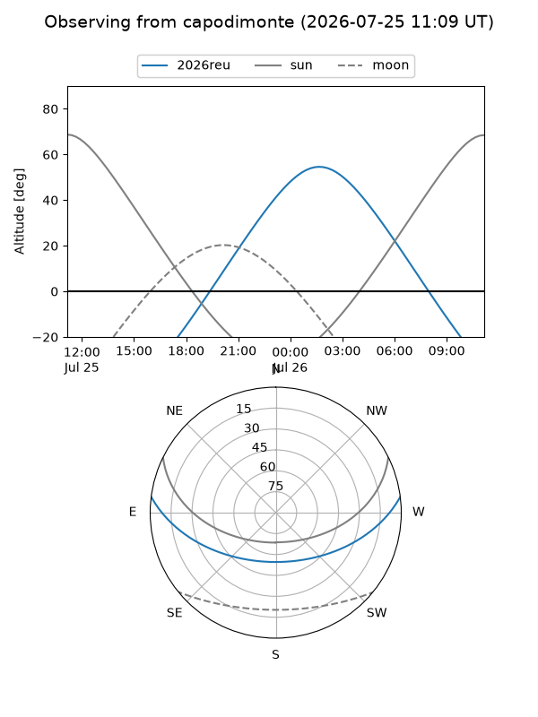
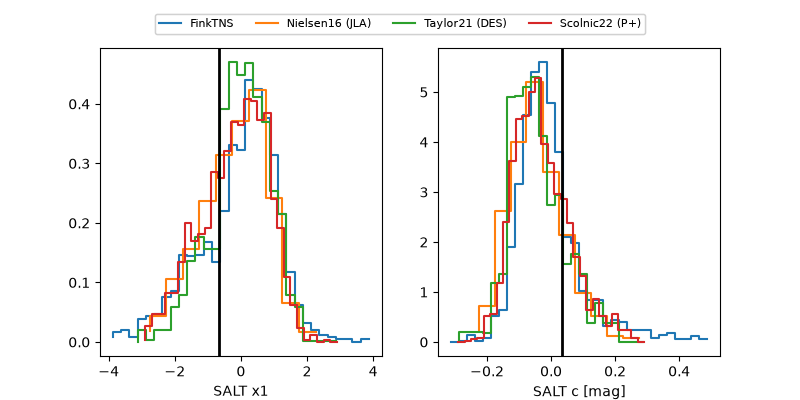

2026reu
Target 2026reu at 2026-07-23 21:19
Aliases and brokers:
FINK-ZTF: ztf.fink-portal.org/ZTF26abegyhx
Lasair-ZTF: lasair-ztf.lsst.ac.uk/objects/ZTF26abegyhx
ALeRCE-ZTF: alerce.online/object/ZTF26abegyhx
YSE-PZ: ziggy.ucolick.org/yse/transient_detail/2026reu
TNS name: wis-tns.org/object/2026reu
Direct TNS query: direct search
alt names
ZTF26abegyhx (ztf,fink_ztf)
2026reu (tns,yse)
Coordinates:
equatorial (ra, dec) = 342.6513,+5.32030
equatorial (HMS+DMS) = 22:50:36.31,+05:19:13.07
galactic (l, b) = (76.4006,-46.34724)
Flags:
TNS type: SN Ia
TNS redshift: 0.0650
peak dt: +12.9
Photometry:
last atlaso=19.25, ztfg=19.12, ztfr=18.76
4 atlaso, 11 ztfg, 14 ztfr detections
Lightcurve

Visibility



Additional plots
